地政学
アテネは東地中海、バルカン、エーゲ海を結ぶギリシャの首都です。議会、官庁、大使館、港、空港、大学が近く、EU、NATO、移民、トルコとの緊張、島嶼防衛が都市の日常に影を落とします。その重みが街路の会話にも見えます。

🇬🇷 ギリシャ / 南ヨーロッパ / World City Atlas
古代都市の丘、議会と官庁、ピレウス港、観光遺産、正教会の暦、移民地区、経済危機の記憶、乾いた夏の生活が重なるギリシャの首都です。
都市の骨格
アテネは遺跡だけの都市ではありません。アクロポリスを囲む密集市街、シンタグマの政治、ピレウスの港、郊外の住宅地、大学、移民の商店街が一つの首都圏を作ります。
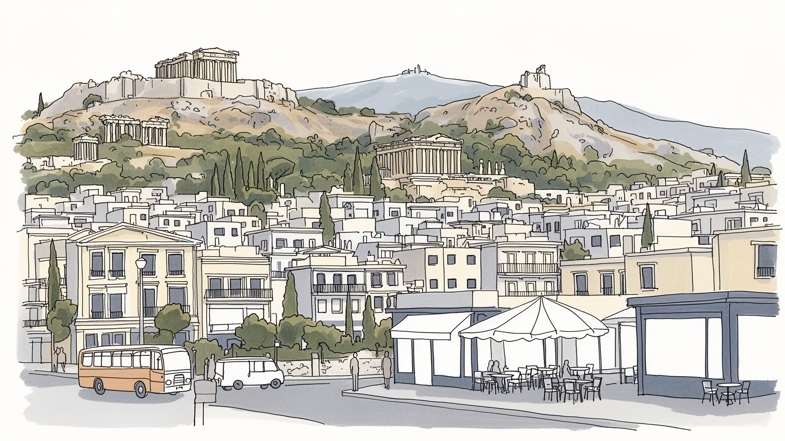
アテネは東地中海、バルカン、エーゲ海を結ぶギリシャの首都です。議会、官庁、大使館、港、空港、大学が近く、EU、NATO、移民、トルコとの緊張、島嶼防衛が都市の日常に影を落とします。その重みが街路の会話にも見えます。
観光、海運関連、行政、教育、医療、小売、飲食、建設が雇用を支えます。危機後は若者の失業や国外流出も記憶され、季節労働、配達、民泊、港湾作業が首都経済の現実を示します。その緊張は家計にも強く残り続けます。
古代ギリシャの記憶、ビザンティンと正教会、近代国家の象徴、移民の礼拝、音楽、演劇、カフェ、サッカーとバスケが重なります。復活祭、聖人の日、家族の食卓が街の時間を整えます。夜のライブも広場へ響きます。
旅行者はアクロポリス、博物館、プラカ、港、島への船を楽しみますが、住民には家賃、猛暑、交通、抗議、福祉、観光混雑、子どもや高齢者の足が切実です。遺産都市と生活都市を同時に読む街です。差は路地にも出ます。
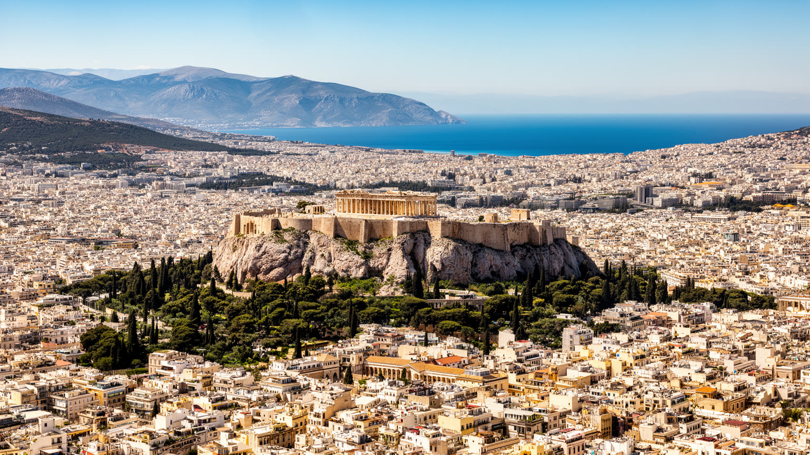
アテネを読む入口は、古代遺跡より先に地形です。アクロポリスは都市の中央に浮かぶ岩山で、周囲の低い丘、古代アゴラ、プラカ、モナスティラキ、シンタグマ、リカヴィトスの斜面が、歩く距離の中で重なります。平野は三方を山に囲まれ、南西へ下ればピレウス港とサロニコス湾へ届きます。この配置は、古代都市が防御、信仰、政治、交易を同じ地図で考えていたことを今も示します。近代化後のアテネは密集した集合住宅と幹線道路で平野を埋めたが、丘の位置は変わらず、どこからでも白い岩と神殿が視界に入ります。地形は観光の背景ではなく、日差し、風、徒歩、交通、眺望、不動産価値、夏の暑さを決める条件です。坂道を上ると古代の距離感が残り、港へ向かう道路を見れば、都市が海運と島嶼世界へ開いていることが分かります。アテネの都市像は、丘の象徴性と港の実用性が同時に作っています。さらに地形は社会の差も映します。眺望のよい斜面、古い中心街、郊外へ広がる住宅地、港湾に近い労働地区では、家賃、通勤、空気の流れ、夏の暑さが違います。古代の岩山は遠い過去ではなく、現代の移動と暮らしを測る基準点でもあります。地下鉄駅の出口、狭い歩道、遺跡を避けて曲がる道路にも、地形と歴史の圧力が残ります。街を上から見るほど、アテネが一つの中心だけでなく、丘と谷と海への通路で組み立てられた都市だと分かります。
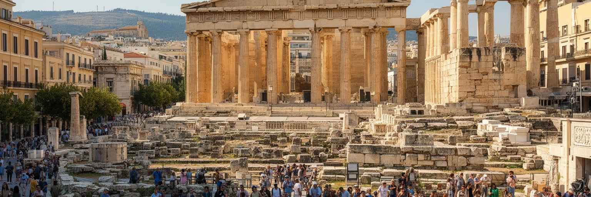
アテネは民主政の発祥地として語られますが、その記憶は単純な誇りだけではありません。古代アゴラやプニュクスの丘は、市民が集まり、議論し、決定した場として世界史の象徴になりました。しかし古代の市民権は女性、奴隷、外国人を排除しており、現代の民主主義とは同じではありません。だからアテネで民主政を読むことは、理想の源流を見ると同時に、誰が発言でき、誰が排除されたのかを考えることでもあります。近代ギリシャの国家形成、王政、軍事政権、学生運動、EU加盟、財政危機時の抗議は、この都市の広場と街路に政治参加の記憶を積み重ねました。シンタグマ広場では観光客、通勤者、デモ、儀仗兵、警察が同じ空間を共有します。民主政は博物館に収まった過去ではなく、緊縮策、雇用、移民、住宅、公共サービスをめぐる現在の争いとして現れます。古代の名を持つ都市だからこそ、民主主義を完成品ではなく、常に更新される都市の実践として読まなければなりません。投票だけでなく、広場に集まること、学校で歴史を学ぶこと、新聞、テレビ、ラジオを読み聞きし、労組や市民団体が声を上げることも都市の政治文化を作ります。アテネの民主政の記憶は、観光客に誇示される遺産であると同時に、市民が国家へ要求する言葉の源でもあります。遺跡の前で語られる自由の物語は、移民、若者、貧困層が実際に参加できる制度かどうかで試され続けます。
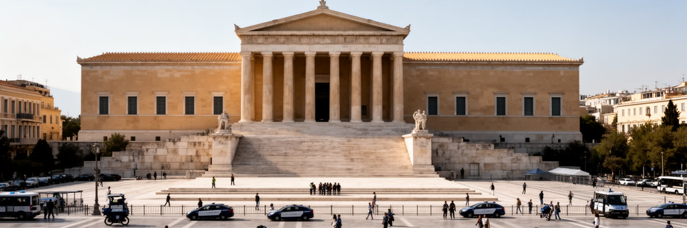
アテネはギリシャの政治、行政、司法、外交、報道が集まる首都です。シンタグマ広場に面する議会、周辺の官庁、大使館、政党、裁判所、大学、新聞社、テレビ局、報道機関は、国家の意思決定を都心の短い距離に置きます。ギリシャ政治は、バルカン、東地中海、EU、NATO、トルコとの関係、島嶼防衛、移民、財政規律を常に抱えるため、首都の街路には国内問題と国際問題が同時に現れます。緊縮政策への抗議、労組の集会、学生運動、サッカーやバスケの人流、記念式典、宗教行事は、交通規制や警備、広場の使われ方を変えます。議会前の衛兵交代は観光の光景ですが、その足元では年金、税制、雇用、公共サービスをめぐる議論が続いています。アテネの首都性は、古代の象徴性だけでなく、近代国家が危機と改革を処理する作業場である点にあります。行政の集中は便利さを生む一方、地方や島々との格差を強めます。首都を読むには、神殿の眺めだけでなく、予算審議、デモの横断幕、官庁の窓口、島から来る人の用事まで見る必要があります。災害対応、難民政策、観光税、島の交通、大学予算もこの首都で決まります。地方に暮らす人にとってアテネは遠い権力であり、同時に医療、教育、行政手続きのために向かう現実的な場所でもあります。首都の便利さが全国の不均衡と結びつくため、アテネの政治は常に中心と周縁の関係を抱えています。その緊張は日常の足元にも及びます。
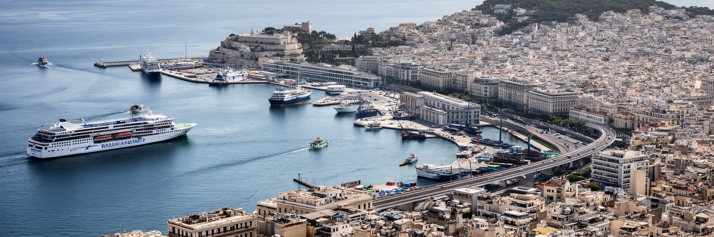
アテネ都市圏を理解するには、中心部だけでなくピレウス港を見る必要があります。ピレウスは古代からアテネの海への出口であり、現在もフェリー、クルーズ、コンテナ、造船、倉庫、海運企業、労働組合が集まる地中海の重要港です。ギリシャは島々の国であり、港は観光客をエーゲ海へ送り出す玄関であると同時に、住民、食料、燃料、郵便、医療、軍事、生活物資をつなぐ基盤でもあります。朝のフェリーターミナルには旅行者の期待と島民の用事が交差し、コンテナ埠頭では国際物流と投資の力学が働きます。近年の港湾運営には外国資本の関与もあり、雇用、労働条件、国家の主権、欧州と中国の関係が都市圏の課題になりました。ピレウスの労働は観光パンフレットでは見えにくいが、アテネの経済と食卓を支えています。港から中心部へ伸びる鉄道や道路は、首都が陸の官庁都市ではなく、海と島々に依存する都市であることを示します。アテネを見る時、アクロポリスの丘と港の岸壁を同じ都市の骨格として読むことが重要です。港町には船員、移民、倉庫労働者、旅行者、漁業関係者、港の食堂が集まり、中心部とは違う時間が流れます。観光の季節には混雑し、冬には島の生活を支える便の重みが増します。港は首都の外れではなく、国家の海上生活を日々調整する場所です。海が荒れる日は、島の孤立が港の掲示板にすぐに現れます。
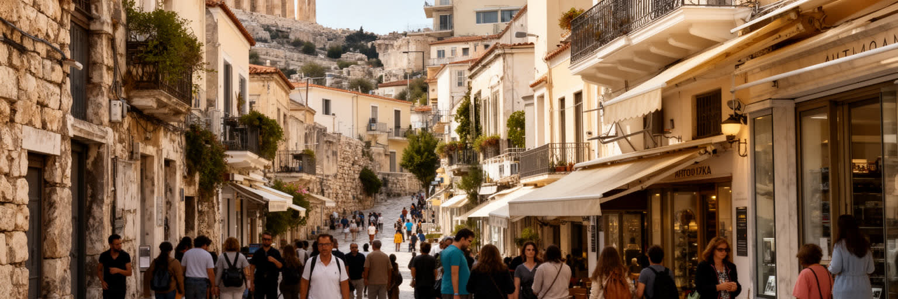
アテネ観光の中心にはアクロポリス、パルテノン神殿、古代アゴラ、ディオニソス劇場、アクロポリス博物館、国立考古学博物館があります。これらは西洋古典文化の象徴として強い力を持ち、世界中の旅行者が短い滞在で訪れます。しかし遺産観光は、石柱を眺めるだけでは理解できません。修復、入場管理、混雑、暑さ対策、ガイドの説明、周辺住民の生活、土産物店、短期賃貸、地下鉄工事で出る遺構の扱いが、都市の現在を作っています。プラカやモナスティラキは絵になる街区ですが、観光化が進むほど、昔からの住民や日常的な店は家賃上昇に押されます。遺産は国の誇りであり、教育資源であり、外貨を得る産業でもあります。そのため、どの時代の記憶を強調し、ビザンティン、オスマン、近代移民の層をどう扱うかが問われます。アテネの遺産観光を読むには、古代を称える視線と、現代の生活を守る視線を同時に持つ必要があります。名所が多いほど、都市は展示物ではなく住まれる場所であることを忘れやすいです。ガイドの言葉、博物館の展示順、修復中の足場、入場料の使途は、遺産を誰のものとして扱うかを示します。観光客が通る路地の裏では、ごみ収集、配送、清掃、警備、露店、住民の通勤も絶えません。遺産の保存は石を守るだけでなく、古い街区で暮らす人の生活条件を守ることでもあります。その均衡が都市の質を深く決め続けます。
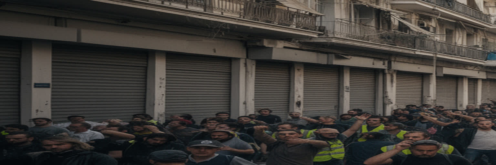
アテネの現代史を読むうえで、二〇〇九年以降のギリシャ債務危機と緊縮政策の記憶は欠かせません。失業、賃金低下、年金削減、公共サービスの縮小、若者の国外流出、店の閉鎖は、家庭の会話と街路の景観を変えました。シンタグマ広場の抗議、落書き、空き店舗、連帯の食堂、医療支援、家族内の助け合いは、危機が数字だけでなく生活の時間を奪ったことを示します。観光が回復し、カフェやホテルがにぎわっても、危機を経験した世代には、将来への不安と制度への不信が残ります。若い専門職は国外で働く選択を迫られ、残った人は不安定な雇用、季節労働、短期契約、配達、民泊関連の仕事に向き合いました。経済危機は都市を壊しただけではありません。協同組合、小さな文化施設、近隣の相互扶助、公共空間の政治性も強めました。アテネの経済を読むには、GDPや観光収入の回復だけでなく、誰の賃金が戻らず、誰が家賃を払えず、どの家族が移住で分断されたのかを見る必要があります。危機の記憶は、都市の自尊心と警戒心の両方を形づくっています。銀行の前にできた列、閉じたシャッター、家族からの仕送り、海外へ出た友人の話は、個人史として残ります。現在の再開発や観光投資を評価する時も、その利益が危機で傷ついた層へ届くのかが問われます。回復した街の明るさの下には、もう一度同じ不安を繰り返したくないという強い感覚があります。
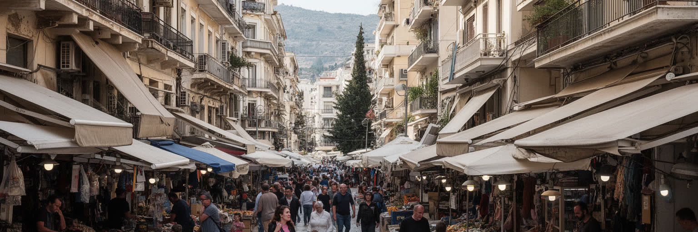
アテネはギリシャ人だけの均質な首都ではありません。二十世紀の小アジアからの避難民、バルカンからの移住、アルバニア系住民、アフリカ、中東、南アジアから来た労働者や難民が、都市の地区を少しずつ変えてきました。オモニア、ヴィクトリア広場、キプセリ、メタクスルギオ周辺では、多言語の店、送金窓口、安い食堂、支援団体、宗教施設、古い集合住宅が近い距離にあります。移民は清掃、建設、介護、飲食、配達、農業との往来、観光サービスを支えますが、在留資格、差別、住居、医療、教育、警察との関係で困難も抱えます。難民にとってアテネは目的地であると同時に、北ヨーロッパへ向かう途中の待機場所にもなります。広場に集まる人びとの姿は、地中海の境界管理と人道支援の矛盾を都市の中心へ持ち込みます。移民地区を読むことは、治安や貧困のラベルを貼ることではありません。誰が店を開き、子どもがどの学校へ通い、どの言語で病院へ行き、近隣住民とどんな関係を作るのかを見ることです。アテネの多文化性は、古代だけではなく現在進行形の移動によって作られています。古い集合住宅は安い住まいを提供する一方、過密や管理不足の問題も抱えます。支援団体、教会、モスク、学校、商店、路上の小商いは、制度の隙間を埋める生活の拠点になります。都市の包容力は、観光地の印象ではなく、こうした地区で日々も試されています。
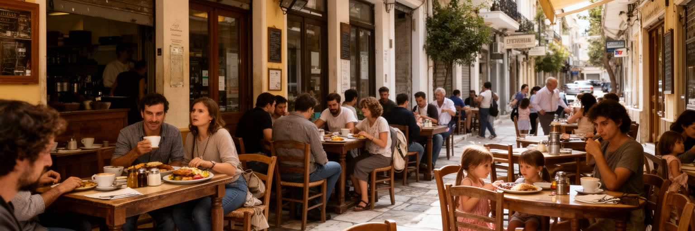
アテネの日常は、食とカフェを抜きに読めません。朝のコーヒー、広場のカフェ、タベルナ、スブラキの店、中央市場、屋台、パン屋、魚屋、家族の食卓は、住民の時間をゆっくり区切ります。ギリシャの食文化はオリーブ油、野菜、豆、魚、羊肉、ヨーグルト、ワイン、ハーブを基礎にし、島々や小アジア、バルカン、オスマン期の影響も重ねています。観光客にはギリシャ料理が明るい地中海の記号として見えますが、都市の食は家計、労働、移民、季節、宗教行事と強く結びつきます。復活祭の食卓、断食期間の料理、日曜の家族の集まり、夜遅い外食は、正教文化と都市生活をつなぎます。カフェは休憩の場所であるだけでなく、政治談義、就職の相談、学生の勉強、試合前後の会話、近所の観察、失業中の時間の受け皿でもあります。危機後には安価な外食と小さな店が生活を支えた一方、観光地の家賃上昇は昔からの食堂を圧迫しました。アテネを食から読むには、名物料理を味わうだけでなく、誰が調理し、どの市場から届き、どの価格なら住民が通えるのかを見る必要があります。カフェの椅子は、都市の会話と不安を受け止める小さな公共空間です。中央市場の朝、住宅地のパン屋、港近くの魚料理、夜のメゼ、移民の食材店をつなぐと、首都の食は観光商品よりずっと複雑になります。安く座れる場所が残るかどうかは、高齢者、学生、失業者、子育て世帯にとって都市の居場所の問題でもあります。
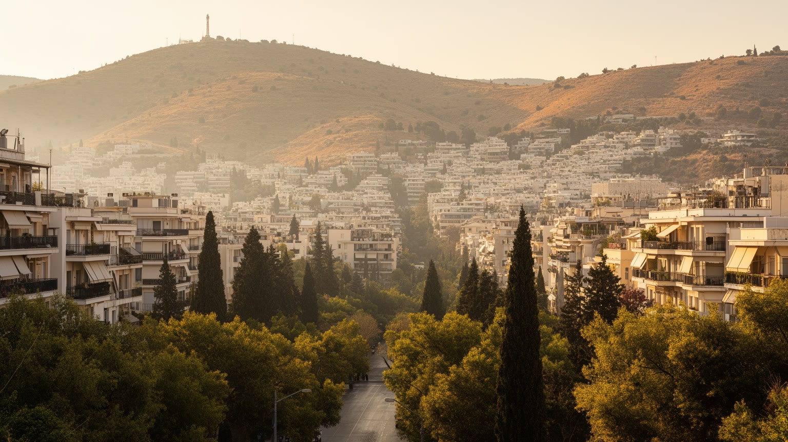
アテネの気候は地中海性で、夏は乾燥して暑く、冬に雨が増えます。青い空と強い日差しは都市の魅力でもありますが、近年の熱波は生活と健康の大きな課題になっています。アテネ盆地は山に囲まれ、密集したコンクリートの集合住宅、交通量、日陰の少ない街路、冷房の排熱がヒートアイランドを強めます。高齢者、低所得世帯、屋外労働者、観光客、移民、エアコンを使いにくい人は暑さの影響を受けやすいです。古代遺跡の観光も、真夏には開場時間、給水、待機列、救急対応を考えなければなりません。乾燥した夏は周辺山地の山火事リスクも高め、煙、避難、郊外住宅地の安全に関わります。気候対策は、単に冷房を増やすことではありません。街路樹、日陰、公共の涼しい場所、断熱、白い屋根、歩きやすい舗装、早い警報、福祉部門の訪問が必要になります。アテネの暑さは、古代都市のロマンとは別の現代的な脆さを示します。気候から都市を読むと、誰が涼しい場所へ逃げられ、誰が働き続けなければならないのかが見えてきます。乾いた夏の美しさと危険は、同じ太陽から来ています。気候適応は都市デザインだけでなく、労働時間、学校、観光管理、医療、住宅政策にも関わります。日陰のないバス停や狭い最上階の部屋は、数字に出にくい危険を抱えます。暑さに耐える都市から、暑さを分かち合って減らす都市へ変われるかが問われています。
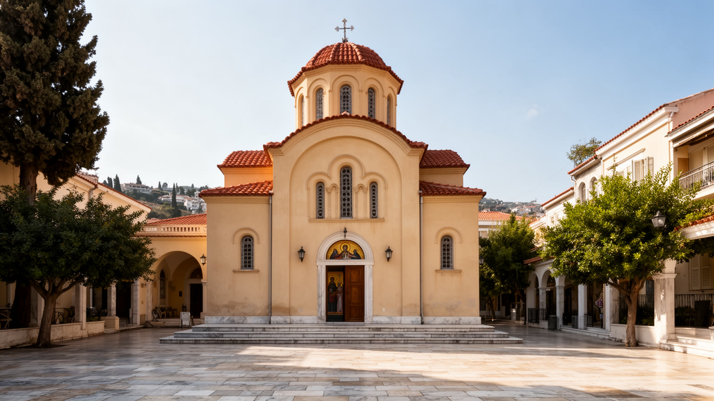
アテネの文化は、古代ギリシャだけで完結しません。ビザンティンの教会、ギリシャ正教の暦、独立戦争の記憶、近代文学、レベティコや現代音楽、演劇、映画、大学、出版社、ギャラリー、ストリートアートが同じ都市にあります。正教会は観光名所の一部である前に、復活祭、聖人の日、洗礼、結婚、葬儀、家族の集まりを支える生活の制度です。教会の鐘、ろうそく、聖像、断食の食習慣は、現代のカフェや地下鉄の生活と並んで存在します。アテネには古典文化を世界へ見せる責任がある一方、現代の作家、音楽家、移民の表現、若者の抗議文化も都市の声です。落書きや小劇場は危機後の不満と創造性を示し、野外映画館や夏の音楽祭は気候と社交の楽しみを作ります。文化と宗教を読むには、パルテノンを頂点に置くだけでなく、近所の教会、大学の討論、移民の礼拝、夜のライブハウス、Panathinaikos、Olympiacos、AEKの試合、家族の食卓を同じ層として見る必要があります。アテネの文化は、古典の権威と生活の信仰、政治的な表現がせめぎ合うところに厚みを持ちます。正教の儀礼は保守的な記憶を保つ一方、若い世代はその枠組みを距離を取りながら使い直します。移民の教会や礼拝所も増え、宗教の地図はより複雑になりました。文化都市としてのアテネは、古典を保存するだけでなく、現在の声を受け止める場所を残せるかで測られます。小さな劇場、書店、レコード店もその試金石です。
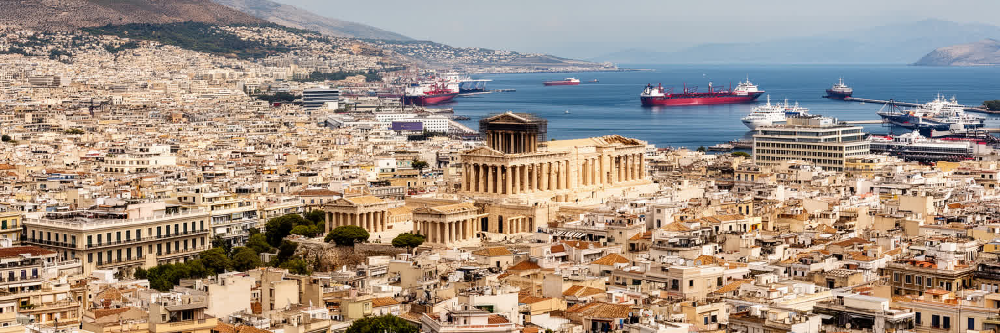
アテネを読むことは、古代の記念碑と現代の生活を切り離さないことです。アクロポリスの丘は強烈な象徴ですが、その周囲には議会、官庁、港へ向かう鉄道、移民地区、大学、カフェ、スタジアム、集合住宅、抗議の広場、観光の行列、夏の暑さがあります。民主政の記憶は誇りであると同時に、現在の参加と排除を考える鏡になります。ピレウス港は島々と世界を結び、観光は収入を生みますが、家賃上昇と労働の不安定さももたらします。経済危機の記憶は、都市の傷として残るだけでなく、連帯、文化、政治参加の力にもなりました。移民はアテネを新しい多文化都市へ変え、正教の暦と古典文化は街の時間に深い層を与えます。都市を評価するなら、遺跡の保存状態や観光人気だけでなく、住民が暑さに耐えられるか、若者が働けるか、移民の子どもが学校へ通えるか、港の労働が尊重されるかを見る必要があります。アテネは過去を展示する都市ではなく、過去を背負いながら危機、移動、気候、政治を毎日調整している都市です。その重なりを読めば、古代の名声の下に、現代ヨーロッパの緊張が見えてきます。歩く時は、神殿から広場、広場から市場、駅から港、夜の広場へ視線を移すとよいです。すると観光の名所、国家の制度、生活の負担、地中海の移動が一つの都市圏でつながります。アテネの価値は、過去を誇る力だけでなく、過去に縛られずに現在の課題を語れる力にもあります。